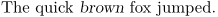
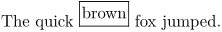
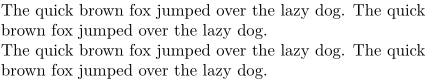
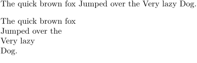
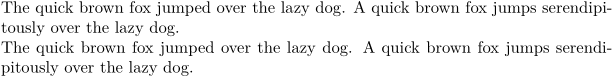
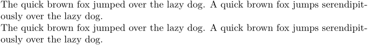

Contents
Delimeters and breaks
Under ordinary circumstances, you don’t need to tell ConTeXt how to group text or where to break lines and pages. ConTeXt handles such things automatically.
However, there are times when you do need to specify these things manually because ConTeXt's default handling isn't what you want. For this, you can include explicit delimiters and breaks to get just the effect you’re after. For example, you might want to:
- have ConTeXt treat some text as a single unit
- tell ConTeXt where to break lines
- tell ConTeXt where to break pages
We'll look at each of these in turn.
Treating text as a single unit
To treat text as a single unit, enclose it in { }. Here are three examples of why and how to do this.
Limiting the scope of a switch
To limit the scope of a switch, enclose the text that it should act on in { }. For example:
-
The quick {\em brown} fox jumped.
produces
- 
Commands that operate on single units
To use a command that operates on the next single unit, enclose the text that it should operate on in { }. For example:
-
The quick \framed{brown} fox jumped.
produces
- 
Using [ ] in command arguments
To delimit a command argument's value that includes [ ], enclose the value in { }. For example:
-
% This doesn't work properly: \section[title=The list element a[3]] % This works properly: \section[title={The list element a[3]}]
produces
-

Line breaks
There are lots of ways to help ConTeXt decide where to break lines.
If you want to force a line break at a certain point no matter what, and you don't want ConTeXt to justify the truncated line, use \crlf or \\:
-
The quick brown fox jumped over the lazy dog. The quick\crlf brown fox jumped over the lazy dog. The quick brown fox jumped over the lazy dog. The quick\\ brown fox jumped over the lazy dog.
produces
- 
If you would like to tell ConTeXt that this might be a good place for a line break, you can use
If you would like a line break to happen whenever you put one in the code (for example, when you are typesetting verse), use \startlines \stoplines. For example:
-
The quick brown fox Jumped over the Very lazy Dog. \startlines The quick brown fox Jumped over the Very lazy Dog. \stoplines
produces
- 
If you would like to allow ConTeXt to hyphenate a word at a certain place to make a line break, if ConTeXt determines that a line break is suitable there, use \-. For example, to suggest a rather nonstandard hyphenation:
-
The quick brown fox jumped over the lazy dog. A quick brown fox jumps serendipitously over the lazy dog. The quick brown fox jumped over the la\-zy dog. A quick brown fox jumps serendi\-pitously over the la\-zy dog.
produces
- 
If you want to set up a hyphenation pattern for a word throughout your document, you can use \hyphenation. For example (again , this is not a standard hyphenation, but it illustrates the method):
-
\hyphenation{la-zy, ser-endi-pit-ous-ly} The quick brown fox jumped over the lazy dog. A quick brown fox jumps serendipitously over the lazy dog. The quick brown fox jumped over the lazy dog. A quick brown fox jumps serendipitously over the lazy dog.
produces
- 
Page breaks
The command to help ConTeXt choose where to put a page break is \pagebreak. This has many options, but if you simply want to force a page break at a certain place, use \pagebreak[yes]. And as you might guess, to tell ConTeXt to try to avoid a page break at a certain place, use \pagebreak[no]. There are many more options to this command, so see the command page \pagebreak for further details.
If you want to keep a certain section of text together, you can use \testpage. This command takes the number of lines that you are testing for as its argument. If there are not n lines available, a page break will be inserted at the location of the \testpage command. For example, if the quotation from \input knuth takes up 10 lines of text in your document and you want to keep the whole quotation on a single page, you could use
\testpage[10] \input knuth
If there are at least 10 lines left on the page, ConTeXt will not insert a page break, so the Knuth quotation will go on the current page. If there are fewer than 10 lines left on the page, ConTeXt will insert a page break, and the Knuth quotation will go on the next page.